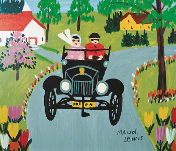
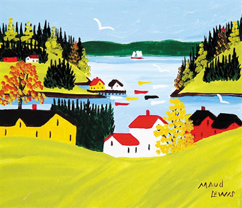

Maudie's Life
Lewis was born Maud Dowley on March 7, 1903 in South Ohio, Nova Scotia, the daughter of John and Agnes (Germain) Dowley. She suffered from a result of juvenile rheumatoid arthritis. In 1935, her father died and in 1937, her mother followed. As was typical at the time, her brother inherited the family home. After living with her brother for a short while, she moved to Digby, Nova Scotia to live with her aunt. Dowley was introduced to art by her mother, who instructed her in the making of watercolour Christmas cards to sell. She began her artistic career by selling hand-drawn and painted Christmas cards.
Art
Maud Lewis used bright colours in her paintings, and subjects were often of flowers, oxen teams, horses, birds, deer, or cats. Many of her paintings are of outdoor scenes, like Cape Island boats bobbing on the water, horses pulling sleigh, skaters, portraits of dogs, cats, deer, birds, and cows. Her paintings were inspired by childhood memories of the landscape and people around Yarmouth and South Ohio as well as Digby locations such as Point Prim and Bayview.
Training 
Lewis had no formal training, but she got her start painting Christmas cards with her mother, which they sold for 25 cents. As an adult, she used leftover house paint to brighten walls, bread boxes, cookie sheets even the stove with butterflies, tulips and swans. Canvas was expensive and hard to come by, so Lewis painted on beaver boards and Masonite and she did it all from her own imagination.
Marriage
Dowley married Everett Lewis, a fish peddler from Marshalltown, on January 16, 1938, at the age of 34.[6] According to Everett, Maud unexpectedly showed up at his door step in response to an advertisement he had posted in the local stores looking for a "live-in or keep house" for a forty year old bachelor. Several weeks later, they were married. They moved into Everett's one-room house with a sleeping loft in Marshalltown, a few miles west of Digby. This house would operate as Maud's studio, where Everett would perform all of the housework. Lewis lived most of her life in poverty with her husband in the one-room house. The house is now located in the Art Gallery of Nova Scotia in Halifax.
Fun 
Maud Lewis accompanied her husband on his daily rounds peddling fish, bringing along Christmas cards that she had drawn. She would sell the cards for twenty five cents each. These cards proved popular with her husband's customers as he sold fish door-to-door and encouraged her to begin painting. She started painting on various other surfaces such as pulp boards (beaverboards), cookie sheets, and Masonite. Lewis was a prolific artist and painted on more or less every available surface in their tiny home: walls, doors, breadboxes, and even the stove. She completely covered the simple patterned commercial wallpaper with sinewy stems, leaves, and blossoms. Everett encouraged Lewis to paint, and he bought her her first set of oils.